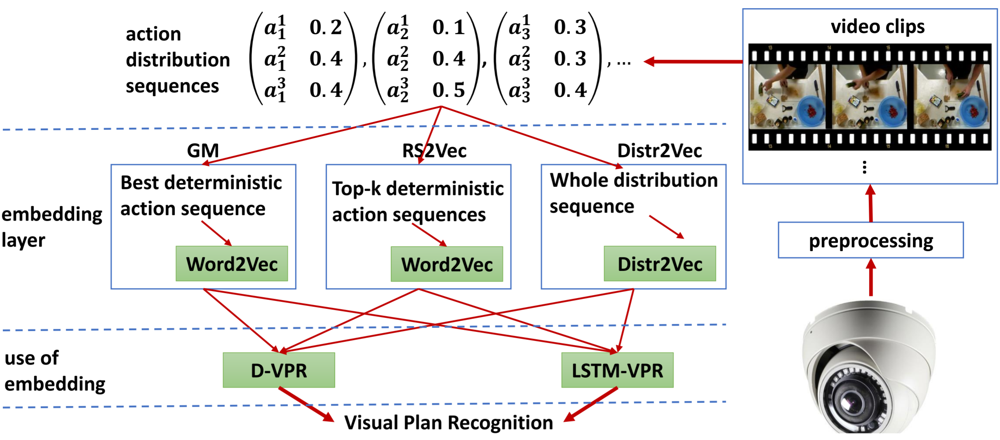

Publications
2025
AAM-SEALS: Developing Aerial-Aquatic Manipulators in SEa, Air, and Land Simulator ICRA-25 Workshop
Show Abstract
Current mobile manipulators and high-fidelity simulators lack the ability to seamlessly operate and simulate across integrated environments spanning sea, air, and land. To address this gap, we introduce Aerial-Aquatic Manipulators (AAMs) in SEa, Air, and Land Simulator (SEALS), a comprehensive and photorealistic simulator designed for AAMs to operate and learn in these diverse environments. The development of AAM-SEALS tackles several significant challenges, including the creation of integrated controllers for flying, swimming, and manipulation, and the high-fidelity simulation of aerial dynamics and hydrodynamics leveraging particle-based hydrodynamics. Our evaluation demonstrates smooth operation and photorealistic transitions across air, water, and their interfaces. We quantitatively validate the fidelity of particle-based hydrodynamics by comparing position-tracking errors across realworld and simulated systems. AAM-SEALS benefits a broad range of robotics communities, including robot learning, aerial robotics, underwater robotics, mobile manipulation, and robotic simulators. We will open-source our code and data to foster the advancement of research in these fields. The overview video is available at https://youtu.be/MbqIIrYvR78. Visit our project website at aam-seals.umd.edu for more details.
NatSGLD: A Dataset with Speech, Gesture, Logic, and Demonstration for Robot Learning in Natural Human-Robot Interaction HRI-25
Show Abstract
Recent advances in multimodal Human-Robot Interaction (HRI) datasets emphasize the integration of speech and gestures, allowing robots to absorb explicit knowledge and tacit understanding. However, existing datasets primarily focus on elementary tasks like object pointing and pushing, limiting their applicability to complex domains. They prioritize simpler human command data but place less emphasis on training robots to correctly interpret tasks and respond appropriately. To address these gaps, we present the NatSGLD dataset, which was collected using a Wizard of Oz (WoZ) method, where participants interacted with a robot they believed to be autonomous. NatSGLD records humans’ multimodal commands (speech and gestures), each paired with a demonstration trajectory and a Linear Temporal Logic (LTL) formula that provides a ground-truth interpretation of the commanded tasks. This dataset serves as a foundational resource for research at the intersection of HRI and machine learning. By providing multimodal inputs and detailed annotations, NatSGLD enables exploration in areas such as multimodal instruction following, plan recognition, and human-advisable reinforcement learning from demonstrations. We release the dataset and code under the MIT License at https://www.snehesh.com/natsgld to support future HRI research.
2024


"Task Success" is not Enough: Investigating the Use of Video-Language Models as Behavior Critics for Catching Undesirable Agent Behaviors COLM-24
Show Abstract
Large-scale generative models are shown to be useful for sampling meaningful candidate solutions, yet they often overlook task constraints and user preferences. Their full power is better harnessed when the models are coupled with external verifiers and the final solutions are derived iteratively or progressively according to the verification feedback. In the context of embodied AI, verification often solely involves assessing whether goal conditions specified in the instructions have been met. Nonetheless, for these agents to be seamlessly integrated into daily life, it is crucial to account for a broader range of constraints and preferences beyond bare task success (e.g., a robot should avoid pointing the blade at a human when handing a knife to the person). However, given the unbounded scope of robot tasks, it is infeasible to construct scripted verifiers akin to those used for explicit-knowledge tasks like the game of Go and theorem proving. This begs the question: when no sound verifier is available, can we use large vision and language models (VLMs), which are approximately omniscient, as scalable Behavior Critics to catch undesirable robot behaviors in videos? To answer this, we first construct a benchmark that contains diverse cases of goal-reaching yet undesirable robot policies. Then, we comprehensively evaluate VLM critics to gain a deeper understanding of their strengths and failure modes. Based on the evaluation, we provide guidelines on how to effectively utilize VLM critiques and showcase a practical way to integrate the feedback into an iterative process of policy refinement.

Learning from Ambiguous Demonstrations with Self-Explanation Guided Reinforcement Learning AAAI-24
Show Abstract
Our work aims at efficiently leveraging ambiguous demonstrations for the training of a reinforcement learning (RL) agent. An ambiguous demonstration can usually be interpreted in multiple ways, which severely hinders the RL agent from learning stably and efficiently. Since an optimal demonstration may also suffer from being ambiguous, previous works that combine RL and learning from demonstration (RLfD works) may not work well. Inspired by how humans handle such situations, we propose to use self-explanation (an agent generates explanations for itself) to recognize valuable high-level relational features as an interpretation of why a successful trajectory is successful. This way, the agent can leverage the explained important relations as guidance for its RL learning. Our main contribution is to propose the SelfExplanation for RL from Demonstrations (SERLfD) framework, which can overcome the limitations of existing RLfD works. Our experimental results show that an RLfD model can be improved by using our SERLfD framework in terms of training stability and performance. To foster further research in self-explanation-guided robot learning, we have made our demonstrations and code publicly accessible at https://github.com/YantianZha/SERLfD.
2022
Symbols as a Lingua Franca for Bridging Human-AI Chasm for Explainable and Advisable AI Systems AAAI-22
Show Abstract
Despite the surprising power of many modern AI systems that often learn their own representations, there is significant discontent about their inscrutability and the attendant problems in their ability to interact with humans. While alternatives such as neuro-symbolic approaches have been proposed, there is a lack of consensus on what they are about. There are often two independent motivations (i) symbols as a lingua franca for human-AI interaction and (ii) symbols as systemproduced abstractions used by the AI system in its internal reasoning. The jury is still out on whether AI systems will need to use symbols in their internal reasoning to achieve general intelligence capabilities. Whatever the answer there is, the need for (human-understandable) symbols in human-AI interaction seems quite compelling. Symbols, like emotions, may well not be sine qua non for intelligence per se, but they will be crucial for AI systems to interact with us humans – as we can neither turn off our emotions nor get by without our symbols. In particular, in many human-designed domains, humans would be interested in providing explicit (symbolic) knowledge and advice – and expect machine explanations in kind. This alone requires AI systems to to maintain a symbolic interface for interaction with humans. In this blue sky paper, we argue this point of view, and discuss research directions that need to be pursued to allow for this type of human-AI interaction.
2021
Contrastively Learning Visual Attention as Affordance Cues from Demonstrations for Robotic Grasping IROS-21
Show Abstract
Conventional works that learn grasping affordance from demonstrations need to explicitly predict grasping configurations, such as gripper approaching angles or grasping preshapes. Classic motion planners could then sample trajectories by using such predicted configurations. In this work,our goal is instead to fill the gap between affordance discovery and affordance-based policy learning by integrating the two objectives in an end-to-end imitation learning framework based on deep neural networks. From a psychological perspective,there is a close association between attention and affordance.Therefore, with an end-to-end neural network, we propose to learn affordance cues as visual attention that serves as a useful indicating signal of how a demonstrator accomplishes tasks,instead of explicitly modeling affordances. To achieve this, we propose a contrastive learning framework that consists of a Siamese encoder and a trajectory decoder. We further introduce a coupled triplet loss to encourage the discovered affordance cues to be more affordance-relevant. Our experimental results demonstrate that our model with the coupled triplet loss achieves the highest grasping success rate in a simulated robot environment.
2019
Explicability as Minimizing Distance from Expected Behavior AAMAS-19
Show Abstract
In order to achieve effective human-AI collaboration, it is necessary for an AI agent to align its behavior with the human's expectations. When the agent generates a task plan without such considerations, it may often result in inexplicable behavior from the human's point of view. This may have serious implications for the human, from increased cognitive load to more serious concerns of safety around the physical agent. In this work, we present an approach to generate explicable behavior by minimizing the distance between the agent's plan and the plan expected by the human. To this end, we learn a mapping between plan distances (distances between expected and agent plans) and human's plan scoring scheme. The plan generation process uses this learned model as a heuristic. We demonstrate the effectiveness of our approach in a delivery robot domain.
Discovering Underlying Plans Based on Shallow Models ACM-TIST-19
Show Abstract
Plan recognition aims to discover target plans (i.e., sequences of actions) behind observed actions, with history plan libraries or action models in hand. Previous approaches either discover plans by maximally “matching” observed actions to plan libraries, assuming target plans are from plan libraries, or infer plans by executing action models to best explain the observed actions, assuming that complete action models are available. In real world applications, however, target plans are often not from plan libraries, and complete action models are often not available, since building complete sets of plans and complete action models are often difficult or expensive. In this paper we view plan libraries as corpora and learn vector representations of actions using the corpora; we then discover target plans based on the vector representations. Specifically, we propose two approaches, DUP and RNNPlanner, to discover target plans based on vector representations of actions. DUP explores the EM-style (Expectation Maximization) framework to capture local contexts of actions and discover target plans by optimizing the probability of target plans, while RNNPlanner aims to leverage long-short term contexts of actions based on RNNs (recurrent neural networks) framework to help recognize target plans. In the experiments, we empirically show that our approaches are capable of discovering underlying plans that are not from plan libraries, without requiring action models provided. We demonstrate the effectiveness of our approaches by comparing its performance to traditional plan recognition approaches in three planning domains. We also compare DUP and RNNPlanner to see their advantages and disadvantages.
Plan-Recognition-Driven Attention Modeling for Visual Recognition AAAI-19 Workshop
Show Abstract
Human visual recognition of activities or external agents involves an interplay between high-level plan recognition and low-level perception. Given that, a natural question to ask is: can low-level perception be improved by high-level plan recognition? We formulate the problem of leveraging recognized plans to generate better top-down attention maps \cite{gazzaniga2009,baluch2011} to improve the perception performance. We call these top-down attention maps specifically as plan-recognition-driven attention maps. To address this problem, we introduce the Pixel Dynamics Network. Pixel Dynamics Network serves as an observation model, which predicts next states of object points at each pixel location given observation of pixels and pixel-level action feature. This is like internally learning a pixel-level dynamics model. Pixel Dynamics Network is a kind of Convolutional Neural Network (ConvNet), with specially-designed architecture. Therefore, Pixel Dynamics Network could take the advantage of parallel computation of ConvNets, while learning the pixel-level dynamics model. We further prove the equivalence between Pixel Dynamics Network as an observation model, and the belief update in partially observable Markov decision process (POMDP) framework. We evaluate our Pixel Dynamics Network in event recognition tasks. We build an event recognition system, ER-PRN, which takes Pixel Dynamics Network as a subroutine, to recognize events based on observations augmented by plan-recognition-driven attention.
2018

Recognizing Plans by Learning Embeddings from Observed Action Distributions AAMAS-18
Show Abstract
Automated video surveillance requires the recognition of agent plans from videos. One promising direction for plan recognition involves learning shallow action affinity models from plan traces. Extracting such traces from raw video involves uncertainty about the actions. One solution is to represent traces as sequences of action distributions. To use such a representation in approximate plan recognition, we need embeddings of these action distributions. To address this problem, we propose a distribution to vector (Distr2Vec) model, which learns embeddings of action distributions using KL-divergence as the loss function.